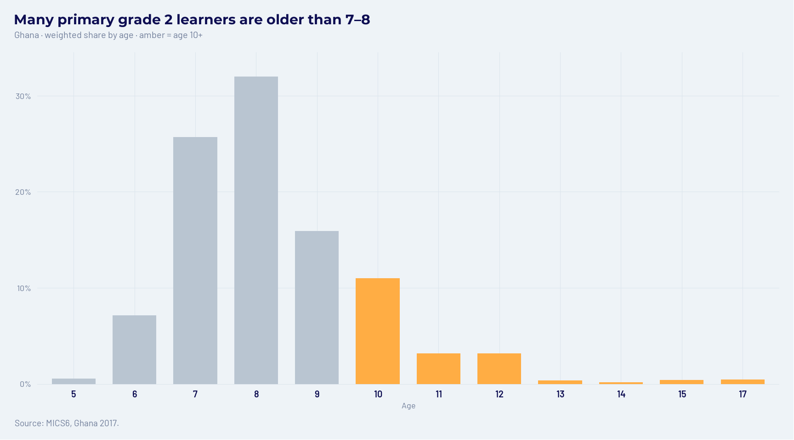
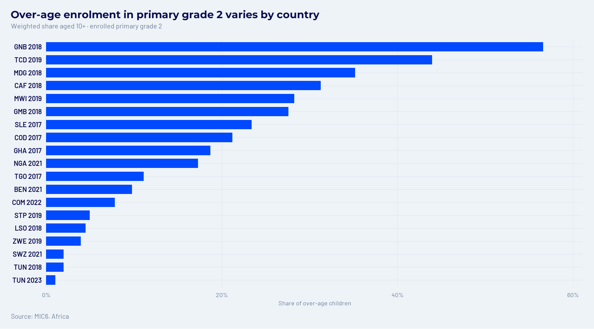
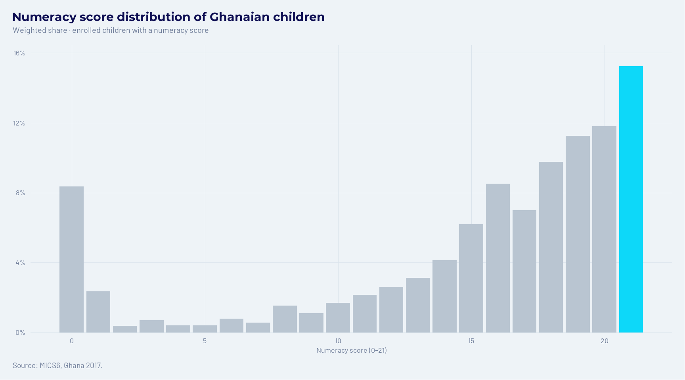
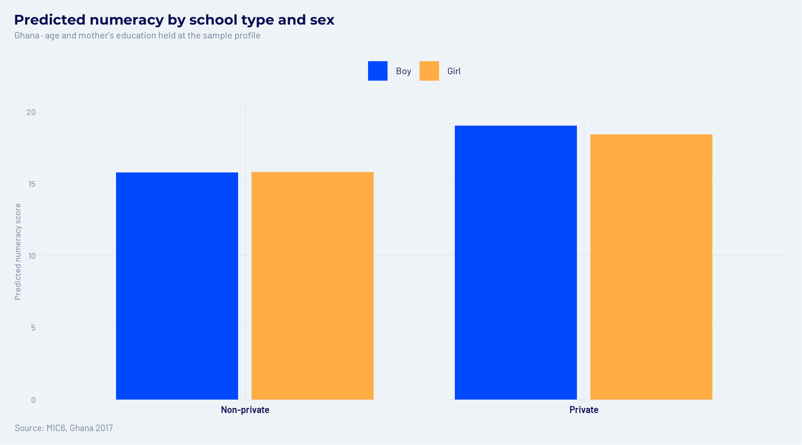

6 Analysing MICS6 data in R
UNICEF’s Multiple Indicator Cluster Surveys (MICS) collect comparable information on children across many African countries. Official country files use different layouts and codes, so they do not pool cleanly on their own. This guide’s harmonised file puts those surveys on one child-level footing: shared names, a common education-level map, numeracy items, and reading outcomes.
This chapter asks what that African file can show about schooling and foundational skills. The ladder is fixed: explore the sample, check over-age enrolment across countries, then dig into Ghana for private schooling, numeracy, and a gender interaction. Download and harmonisation steps live in Download the MICS Data, Harmonising MICS6 reading outcomes, and Harmonising MICS6 FS background themes.
6.2 Load the harmonised file
After read_dta(), you hold one row per child aged 5–17 from the African
surveys in this build: schooling background, sex, sample weights, a numeracy
score, and reading skills where the assessment was completed.
dat <- read_dta("data/mics6-harmonized-v1.dta")
dat <- dat %>%
mutate(
survey = paste(country_iso3, year),
female = if_else(sex == 2L, 1L, if_else(sex == 1L, 0L, NA_integer_))
)
glimpse(dat %>% select(
country_iso3, year, HH1, HH2, LN, age, female, private, enrolled,
current_level_h, current_grade, numeracy_score, reading_skills, fsweight
))Rows: 166,980
Columns: 14
$ country_iso3 <chr> "BEN", "BEN", "BEN", "BEN", "BEN", "BEN", "BEN", "BEN", "BEN", "BEN", "BEN", "BEN", "BEN", "BEN", "BEN", "BEN", "BEN", "BEN", "BEN…
$ year <dbl> 2021, 2021, 2021, 2021, 2021, 2021, 2021, 2021, 2021, 2021, 2021, 2021, 2021, 2021, 2021, 2021, 2021, 2021, 2021, 2021, 2021, 2021…
$ HH1 <dbl> 1, 1, 1, 1, 1, 1, 1, 1, 1, 1, 1, 1, 1, 1, 2, 2, 2, 2, 2, 2, 2, 2, 2, 2, 2, 2, 2, 2, 2, 2, 3, 3, 3, 3, 3, 3, 3, 3, 3, 3, 3, 3, 3, 3…
$ HH2 <dbl> 1, 3, 4, 7, 8, 9, 10, 12, 13, 14, 16, 20, 21, 22, 2, 3, 4, 7, 8, 10, 11, 12, 13, 14, 15, 17, 18, 20, 21, 22, 2, 3, 4, 5, 8, 10, 11…
$ LN <dbl> 6, 4, 6, 3, 3, 3, 3, 3, 4, 6, 4, 2, 3, 5, 4, 3, 5, 5, 3, 4, 5, 3, 4, 6, 2, 3, 3, 4, 7, 3, 3, 6, 3, 3, 3, 4, 7, 4, 2, 7, 4, 6, 3, 6…
$ age <dbl+lbl> 15, 16, 7, 9, 13, 8, 14, 13, 13, 5, 9, 5, 10, 12, 6, 11, 11, 5, 5, 8, 8, 8, 10, 7, 16, 7, 6, 14, 7, 5, 16, 11…
$ female <int> 1, 1, 0, 0, 1, 0, 0, 1, 0, 1, 0, 0, 0, 1, 0, 0, 0, 0, 1, 0, 1, 0, 1, 0, 1, 0, 1, 1, 1, 0, 1, 0, 1, 0, 1, 0, 1, 0, 1, 0, 1, 0, 1, 0…
$ private <dbl+lbl> NA, NA, NA, NA, 0, 0, NA, 0, NA, NA, NA, NA, 0, NA, NA, 1, NA, NA, 1, NA, NA, 0, NA, NA, NA, 0, 0, NA, NA, NA, NA, NA…
$ enrolled <dbl+lbl> 1, 2, 1, NA, 1, 1, 2, 1, 1, NA, 1, NA, 1, 1, 1, 1, 1, 1, 1, 1, NA, 1, 1, 1, 1, 1, 1, 1, 1, NA, 1, 1…
$ current_level_h <dbl+lbl> 2, NA, 1, NA, 2, 1, NA, 2, 2, NA, 1, NA, 1, 1, 1, 2, 1, 1, 1, 1, NA, 1, 1, 1, 2, 1, 1, 2, 1, NA, 2, 1…
$ current_grade <dbl+lbl> 3, NA, 3, NA, 3, 4, NA, 1, 2, NA, 2, NA, 3, 6, 2, 2, 4, 2, 2, 4, NA, 3, 4, 3, 4, 4, 2, 1, 2, NA, 1, 5…
$ numeracy_score <dbl> NA, NA, 2, 0, 21, 3, 14, 17, 21, NA, 1, NA, 1, 8, NA, 21, 20, NA, NA, 14, 0, 0, 11, 13, NA, 15, NA, 20, 0, NA, NA, 18, 0, NA, NA, …
$ reading_skills <dbl+lbl> NA, NA, NA, NA, 0, 0, NA, 0, 1, NA, NA, NA, 0, 1, NA, 1, 0, NA, NA, NA, NA, NA, 0, NA, NA, NA, NA, 0, NA, NA, NA, 0…
$ fsweight <dbl> 0.6108450, 0.6108450, 1.8325351, 0.6108450, 1.8325351, 1.2216901, 0.6108450, 1.8325351, 0.6108450, 1.8325351, 1.8325351, 0.6108450…numeracy_score counts correct answers across the 21 foundational numeracy
items (0–21). reading_skills is 1 when a child met the foundational reading
threshold among those assessed. private is 1 for private schools and 0 for
public, religious, community, or other under the usual MICS ownership codes
(COD is left missing).
6.3 Explore and unique child ID
Before any model, confirm what each row is and that children do not duplicate. A broken key silently double-counts households when you merge or tabulate.
[1] 166980[1] 159# A tibble: 19 × 3
country_iso3 year n
<chr> <dbl> <int>
1 BEN 2021 11710
2 CAF 2018 6167
3 COD 2017 14038
4 COM 2022 4246
5 GHA 2017 8965
6 GMB 2018 5850
7 GNB 2018 5849
8 LSO 2018 5301
9 MDG 2018 12429
10 MWI 2019 17976
11 NGA 2021 22706
12 SLE 2017 11046
13 STP 2019 2275
14 SWZ 2021 2551
15 TCD 2019 14865
16 TGO 2017 5062
17 TUN 2018 4983
18 TUN 2023 3806
19 ZWE 2019 7155# Candidate keys
key_vars <- c("country_iso3", "year", "HH1", "HH2", "LN")
n_distinct(dat[key_vars]) == nrow(dat)[1] TRUE# Same idea with the compact ID copies
key_vars2 <- c("country_iso3", "year", "cluster", "hhno", "linech")
n_distinct(dat[key_vars2]) == nrow(dat)[1] TRUEThe country–year table is the map of this guide’s Africa coverage: nineteen
surveys from Benin through Zimbabwe (Tunisia appears twice). Both key
combinations return TRUE — one row per child. A single childid helps when
browsing or merging:
dat <- dat %>%
group_by(country_iso3, year, HH1, HH2, LN) %>%
mutate(childid = cur_group_id()) %>%
ungroup() %>%
select(childid, everything())
n_distinct(dat$childid) == nrow(dat)[1] TRUE[1] 06.4 Survey design
MICS draws children in clusters. Ignoring that design understates uncertainty
and can distort country contrasts. Point estimates use the child weight
fsweight; standard errors treat HH1 as the cluster. For pooled
cross-country work, nest clusters inside each survey.
design_one <- function(df) {
df %>%
as_survey_design(
ids = HH1,
weights = fsweight,
nest = TRUE
)
}
design_pooled <- function(df) {
df %>%
as_survey_design(
ids = HH1,
strata = survey,
weights = fsweight,
nest = TRUE
)
}
# Working sample for most examples: currently enrolled, positive weight
an <- dat %>%
filter(
enrolled == 1L,
!is.na(fsweight), fsweight > 0,
!is.na(HH1)
)Rebuild the design after any mutate() that creates variables you will
analyse. The design object stores a snapshot of the data.
6.5 Mean age
How old are children currently enrolled in school? Start with Ghana, then scan the full African set.
gha <- an %>%
filter(country_iso3 == "GHA")
design_one(gha) %>%
summarise(
age_mean = survey_mean(age, na.rm = TRUE, vartype = "se"),
n = unweighted(n())
)# A tibble: 1 × 3
age_mean age_mean_se n
<dbl> <dbl> <int>
1 10.4 0.0882 8088Among enrolled children in Ghana 2017, mean age is about 10.4 years (SE ≈ 0.09). The FS module covers ages 5–17, so this mean mixes primary and secondary learners.
age_by_cty <- design_pooled(an) %>%
group_by(country_iso3, year) %>%
summarise(
age_mean = survey_mean(age, na.rm = TRUE, vartype = NULL),
n = unweighted(n()),
.groups = "drop"
) %>%
arrange(country_iso3, year)
age_by_cty# A tibble: 19 × 4
country_iso3 year age_mean n
<chr> <dbl> <dbl> <int>
1 BEN 2021 9.94 7860
2 CAF 2018 10.4 3988
3 COD 2017 10.9 8976
4 COM 2022 10.7 3704
5 GHA 2017 10.4 8088
6 GMB 2018 10.3 4214
7 GNB 2018 10.6 4185
8 LSO 2018 10.6 4428
9 MDG 2018 10.4 7233
10 MWI 2019 10.5 15693
11 NGA 2021 10.5 16428
12 SLE 2017 10.5 7935
13 STP 2019 10.9 2018
14 SWZ 2021 11.2 2263
15 TCD 2019 11.0 4760
16 TGO 2017 10.6 4309
17 TUN 2018 10.5 4516
18 TUN 2023 10.8 3266
19 ZWE 2019 9.95 6015Country means sit in a fairly tight band, but age alone is not grade. The next section fixes the grade and asks how many children are older than they should be for that grade.
6.6 Over-age children in primary grade 2
Late entry and repetition leave many African classrooms with children far above the expected age for their grade. If primary starts around age 6, primary grade 2 learners are typically 7 or 8. Ages 10 and above are clearly over-age for that grade.
Restrict to primary (current_level_h == 1) and grade 2
(current_grade == 2). Without the level filter, “grade 2” would also pull in
secondary year 2.
# Typical ages 7–8; treat age 10+ as clearly over-age for primary grade 2
g2_prim <- an %>%
filter(
current_level_h == 1L,
current_grade == 2L,
!is.na(age)
) %>%
mutate(overage = as.integer(age >= 10L))
design_one(g2_prim %>% filter(country_iso3 == "GHA")) %>%
summarise(
age_mean = survey_mean(age, vartype = "se"),
overage_share = survey_mean(overage, vartype = "se"),
n = unweighted(n())
)# A tibble: 1 × 5
age_mean age_mean_se overage_share overage_share_se n
<dbl> <dbl> <dbl> <dbl> <int>
1 8.28 0.0958 0.187 0.0229 825In Ghana, mean age in primary grade 2 is about 8.3, and roughly 19% of those children are aged 10 or older.
age_gha_g2 <- design_one(g2_prim %>% filter(country_iso3 == "GHA")) %>%
group_by(age) %>%
summarise(
p = survey_mean(vartype = NULL),
n = unweighted(n()),
.groups = "drop"
) %>%
mutate(fill = if_else(age >= 10L, aflearn_amber, aflearn_neutral[["context"]]))
age_gha_g2 %>%
ggplot(aes(x = factor(age), y = p, fill = fill)) +
geom_col(width = 0.72, colour = NA) +
scale_fill_identity() +
scale_y_continuous(
labels = scales::percent_format(accuracy = 1),
expand = expansion(mult = c(0, 0.08))
) +
labs(
title = "Many primary grade 2 learners are older than 7–8",
subtitle = "Ghana · weighted share by age · amber = age 10+",
x = "Age",
y = NULL,
caption = "Source: MICS6, Ghana 2017."
) +
theme_aflearn() +
theme(axis.text.x = aflearn_axis_category())
Figure 6.1: Age distribution in primary grade 2 — Ghana. Ages 10 and above are highlighted as over-age.
The mass sits at 7–8, but the amber bars show a long right tail into the teens. That is the over-age problem in one classroom label.
overage_cty <- design_pooled(g2_prim) %>%
group_by(country_iso3, year) %>%
summarise(
overage_share = survey_mean(overage, vartype = NULL),
age_mean = survey_mean(age, vartype = NULL),
n = unweighted(n()),
.groups = "drop"
) %>%
arrange(desc(overage_share))
overage_cty# A tibble: 19 × 5
country_iso3 year overage_share age_mean n
<chr> <dbl> <dbl> <dbl> <int>
1 GNB 2018 0.566 10.0 759
2 TCD 2019 0.440 9.45 996
3 MDG 2018 0.352 9.03 1168
4 CAF 2018 0.313 8.82 786
5 MWI 2019 0.283 8.59 2363
6 GMB 2018 0.276 8.70 578
7 SLE 2017 0.234 8.29 1345
8 COD 2017 0.212 8.34 1366
9 GHA 2017 0.187 8.28 825
10 NGA 2021 0.173 7.93 2006
11 TGO 2017 0.111 7.81 583
12 BEN 2021 0.0977 7.21 1401
13 COM 2022 0.0782 7.31 416
14 STP 2019 0.0496 7.88 205
15 LSO 2018 0.0447 7.45 431
16 ZWE 2019 0.0393 7.51 672
17 SWZ 2021 0.0198 7.69 200
18 TUN 2018 0.0198 7.34 387
19 TUN 2023 0.0105 7.29 294overage_cty %>%
mutate(label = paste(country_iso3, year)) %>%
ggplot(aes(x = overage_share, y = reorder(label, overage_share))) +
geom_col(width = 0.72, fill = aflearn_electric_blue, colour = NA) +
scale_x_continuous(
labels = scales::percent_format(accuracy = 1),
expand = expansion(mult = c(0, 0.08))
) +
labs(
title = "Over-age enrolment in primary grade 2 varies by country",
subtitle = "Weighted share aged 10+ · enrolled primary grade 2",
x = "Share of over-age children",
y = NULL,
caption = "Source: MIC6. Africa "
) +
theme_aflearn() +
theme(axis.text.y = aflearn_axis_category())
Figure 6.2: Share of primary grade 2 children aged 10 or older, by survey.
The ranking is stark. Guinea-Bissau and Chad sit near the top because more than two in five primary grade 2 children are aged 10+. Tunisia and Eswatini sit near the bottom (about 1–2%). Same grade label, very different age profiles across this African set.
6.7 Numeracy and reading skills
What do foundational skills look like in one country before we compare school types? Ghana is a useful case: a large enrolled sample and clear private-school coding.
# Ghana: mean numeracy among enrolled children with a score
design_one(gha %>% filter(!is.na(numeracy_score))) %>%
summarise(
numeracy_mean = survey_mean(numeracy_score, vartype = "se"),
n = unweighted(n())
)# A tibble: 1 × 3
numeracy_mean numeracy_mean_se n
<dbl> <dbl> <int>
1 15.0 0.241 5237# Share meeting foundational reading skills (where assessed)
design_one(gha %>% filter(!is.na(reading_skills))) %>%
summarise(
reading_share = survey_mean(reading_skills, vartype = "se"),
n = unweighted(n())
)# A tibble: 1 × 3
reading_share reading_share_se n
<dbl> <dbl> <int>
1 0.342 0.0157 3512Enrolled Ghanaian children with a numeracy score average about 15 of 21 items correct (SE ≈ 0.24). Among those with a reading-skills indicator, about 34% meet the foundational reading threshold (SE ≈ 0.02). Note that the two samples differ: numeracy and reading are not always completed for the same children.
num_share <- design_one(gha %>% filter(!is.na(numeracy_score))) %>%
group_by(numeracy_score) %>%
summarise(
p = survey_mean(vartype = NULL),
n = unweighted(n()),
.groups = "drop"
) |>
ungroup()
num_share %>%
mutate(fill = ifelse(numeracy_score == 21, aflearn_cyan, aflearn_neutral[["context"]])) |>
ggplot(aes(x = numeracy_score, y = p, fill = fill)) +
geom_col(width = 0.9, colour = NA) +
scale_fill_identity() +
scale_y_continuous(
labels = scales::percent_format(accuracy = 1),
expand = expansion(mult = c(0, 0.08))
) +
labs(
title = "Numeracy score distribution of Ghanaian children",
subtitle = "Weighted share · enrolled children with a numeracy score",
x = "Numeracy score (0–21)",
y = NULL,
caption = "Source: MICS6, Ghana 2017."
) +
theme_aflearn()
Figure 6.3: Distribution of numeracy scores among enrolled Ghanaian children.
The distribution piles toward the top of the 0–21 scale, with a thinner left tail of low scorers. That shape is the backdrop for the private-school contrast.
6.8 Private versus non-private schools
Do privately schooled children score higher on numeracy? Compare weighted means before adding controls.
gha_num <- gha %>%
filter(!is.na(numeracy_score), !is.na(private))
design_one(gha_num) %>%
group_by(private) %>%
summarise(
numeracy_mean = survey_mean(numeracy_score, vartype = "se"),
n = unweighted(n()),
.groups = "drop"
)# A tibble: 2 × 4
private numeracy_mean numeracy_mean_se n
<dbl+lbl> <dbl> <dbl> <int>
1 0 [Non-private] 15.4 0.296 895
2 1 [Private] 18.5 0.283 425In Ghana the raw gap is large: about 15.4 among non-private learners versus 18.5 among private-school learners. That is not a causal estimate. Families that choose private schools also differ in age mix, gender, and mother’s education. Regression holds those factors fixed.
6.9 Multivariate regression (Ghana)
Stay in Ghana for the rest of the chapter. A single-country design keeps the story readable; the same steps extend to other surveys in the file. Restrict to enrolled children aged 7–14 with non-missing numeracy, private-school status, sex, and mother’s education (codes 0–5).
gha_reg <- gha %>%
filter(
age %in% 7:14,
!is.na(numeracy_score),
!is.na(private),
!is.na(female),
mother_edu_h %in% 0:5
) %>%
mutate(mother_edu_f = factor(mother_edu_h))
des_gha <- design_one(gha_reg)
m1 <- svyglm(numeracy_score ~ private, design = des_gha)
summary(m1)
Call:
svyglm(formula = numeracy_score ~ private, design = des_gha)
Survey design:
Called via srvyr
Coefficients:
Estimate Std. Error t value Pr(>|t|)
(Intercept) 15.3579 0.2958 51.928 < 2e-16 ***
private 3.1187 0.4133 7.547 1.79e-13 ***
---
Signif. codes: 0 '***' 0.001 '**' 0.01 '*' 0.05 '.' 0.1 ' ' 1
(Dispersion parameter for gaussian family taken to be 28.75241)
Number of Fisher Scoring iterations: 2m2 <- svyglm(
numeracy_score ~ private + age + female + mother_edu_f,
design = des_gha
)
summary(m2)
Call:
svyglm(formula = numeracy_score ~ private + age + female + mother_edu_f,
design = des_gha)
Survey design:
Called via srvyr
Coefficients:
Estimate Std. Error t value Pr(>|t|)
(Intercept) 4.18043 1.28956 3.242 0.00126 **
private 2.93151 0.49012 5.981 3.95e-09 ***
age 0.87693 0.09499 9.232 < 2e-16 ***
female -0.19087 0.40149 -0.475 0.63469
mother_edu_f1 2.42129 0.73919 3.276 0.00112 **
mother_edu_f2 2.58272 0.60624 4.260 2.39e-05 ***
mother_edu_f3 2.92275 0.67750 4.314 1.89e-05 ***
mother_edu_f5 4.15190 0.96519 4.302 2.00e-05 ***
---
Signif. codes: 0 '***' 0.001 '**' 0.01 '*' 0.05 '.' 0.1 ' ' 1
(Dispersion parameter for gaussian family taken to be 23.8924)
Number of Fisher Scoring iterations: 2In m1, the intercept is mean numeracy in non-private schools; the
coefficient on private is the associated gap. In m2, that gap is
conditional on age, sex, and mother’s education. If the private coefficient
shrinks, part of the raw gap was composition — not an independent school-type
effect.
6.10 Private × female interaction
Does the private-school association differ for girls and boys?
m_int <- svyglm(
numeracy_score ~ private * female + age + mother_edu_f,
design = des_gha
)
summary(m_int)
Call:
svyglm(formula = numeracy_score ~ private * female + age + mother_edu_f,
design = des_gha)
Survey design:
Called via srvyr
Coefficients:
Estimate Std. Error t value Pr(>|t|)
(Intercept) 4.06624 1.25944 3.229 0.00132 **
private 3.24888 0.78474 4.140 4.01e-05 ***
female 0.03200 0.50820 0.063 0.94982
age 0.87792 0.09383 9.357 < 2e-16 ***
mother_edu_f1 2.41563 0.73075 3.306 0.00101 **
mother_edu_f2 2.58423 0.60501 4.271 2.28e-05 ***
mother_edu_f3 2.91001 0.67670 4.300 2.01e-05 ***
mother_edu_f5 4.12109 0.97329 4.234 2.68e-05 ***
private:female -0.63539 0.82734 -0.768 0.44282
---
Signif. codes: 0 '***' 0.001 '**' 0.01 '*' 0.05 '.' 0.1 ' ' 1
(Dispersion parameter for gaussian family taken to be 23.86947)
Number of Fisher Scoring iterations: 2 (Intercept) private female age mother_edu_f1 mother_edu_f2 mother_edu_f3 mother_edu_f5 private:female
4.0662418 3.2488781 0.0319954 0.8779173 2.4156286 2.5842257 2.9100140 4.1210917 -0.6353917 Read the coefficients as follows:
private— association for boys (female = 0)female— girl–boy difference in non-private schoolsprivate:female— how much the private-school association differs for girls
The private-school association for girls is private + private:female. A
negative interaction means the private premium is smaller for girls than for
boys (or the reverse if positive). These are associations in Ghana’s MICS
sample, not a multi-country causal claim.
6.11 Predicted means
Coefficients on interactions are easy to misread. Predicted means at the four private × female cells turn the same model into a table you can plot. Hold age and mother’s education at the sample profile (modal mother’s education).
mf <- model.frame(m_int)
mom_mode <- names(sort(table(mf$mother_edu_f), decreasing = TRUE))[1]
newdata <- expand.grid(
private = c(0, 1),
female = c(0, 1),
age = mean(mf$age, na.rm = TRUE),
mother_edu_f = factor(mom_mode, levels = levels(mf$mother_edu_f))
)
newdata$predicted <- as.numeric(
predict(m_int, newdata = newdata, type = "response")
)
newdata %>%
mutate(
school = if_else(private == 1, "Private", "Non-private"),
sex_lab = if_else(female == 1, "Girl", "Boy")
) %>%
select(school, sex_lab, age, mother_edu_f, predicted) school sex_lab age mother_edu_f predicted
1 Non-private Boy 10.41016 2 15.78973
2 Private Boy 10.41016 2 19.03860
3 Non-private Girl 10.41016 2 15.82172
4 Private Girl 10.41016 2 18.43521pred_plot <- newdata %>%
mutate(
school = factor(
if_else(private == 1, "Private", "Non-private"),
levels = c("Non-private", "Private")
),
sex_lab = factor(
if_else(female == 1, "Girl", "Boy"),
levels = c("Boy", "Girl")
)
)
cols_sex <- aflearn_pal_categorical(2)
names(cols_sex) <- c("Boy", "Girl")
pred_plot %>%
ggplot(aes(x = school, y = predicted, fill = sex_lab)) +
geom_col(position = position_dodge(width = 0.8), width = 0.72, colour = NA) +
scale_fill_manual(values = cols_sex, name = NULL) +
scale_y_continuous(expand = expansion(mult = c(0, 0.08))) +
labs(
title = "Predicted numeracy by school type and sex",
subtitle = "Ghana · age and mother’s education held at the sample profile",
x = NULL,
y = "Predicted numeracy score",
caption = "Source: MIC6, Ghana 2017"
) +
theme_aflearn() +
theme(
legend.position = "top",
axis.text.x = aflearn_axis_category()
)
Figure 6.4: Predicted mean numeracy by school type and sex — Ghana, controls at sample profile.
Compare the four bars: the height gap between private and non-private within each sex is the private association; the gap between girl and boy within each school type is the gender difference. That is the interaction in one picture.